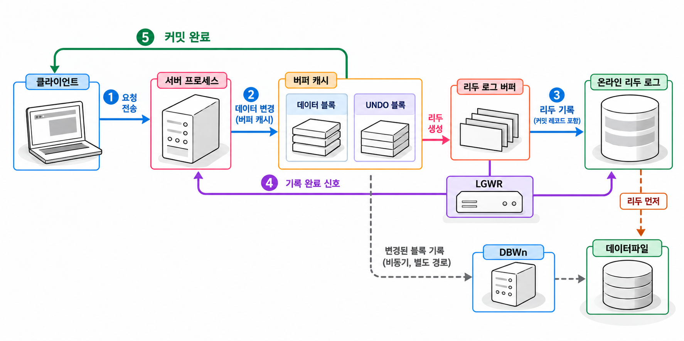

9장. 트랜잭션과 읽기 일관성이란?
1. 트랜잭션의 경계
1.1 ACID와 업무 처리 단위
트랜잭션(transaction)은 하나의 업무로 묶어 확정하거나 취소할 SQL 작업의 단위입니다. SQL 한 문장으로 끝날 수도 있고, 여러 문장으로 이루어질 수도 있습니다.
주문을 확정하면서 재고를 차감한다고 생각해 봅시다. 주문만 저장되고 재고 차감이 취소되면 판매 가능한 수량이 틀어집니다. 두 작업을 하나의 트랜잭션으로 묶으면 함께 확정하거나 함께 취소할 수 있습니다.
트랜잭션의 기본 성질을 ACID라고 합니다.
| 성질 | 의미 | 주문 처리에 적용한 예 |
|---|---|---|
| 원자성(Atomicity) | 작업 전체가 확정되거나 취소됩니다. | 주문 저장과 재고 차감을 함께 취소합니다. |
| 일관성(Consistency) | 정해진 무결성 규칙을 지키는 상태로 바뀝니다. | 재고가 음수가 될 수 없다는 규칙을 지킵니다. |
| 격리성(Isolation) | 동시에 실행되는 트랜잭션 사이의 간섭을 제어합니다. | 다른 세션의 미확정 재고 변경을 읽지 않습니다. |
| 지속성(Durability) | 확정한 변경은 장애가 발생해도 복구할 수 있습니다. | 확정된 주문을 복구 과정에서 되살립니다. |
DBMS가 업무 규칙을 스스로 알아내지는 않습니다. 재고 제한은 제약조건과 SQL로 표현해야 합니다. 여러 SQL을 어디까지 하나의 트랜잭션으로 묶을지도 애플리케이션이 정합니다.
Oracle은 SQL 한 문장의 원자성도 보장합니다. 여러 행을 바꾸는 UPDATE가 제약조건 위반으로 실패하면 해당 문장이 바꾼 내용은 취소됩니다. 다만 같은 트랜잭션에서 앞서 성공한 SQL까지 모두 자동으로 취소되지는 않습니다. 업무 전체를 취소해야 한다면 애플리케이션이 ROLLBACK을 실행해야 합니다.
1.2 COMMIT·ROLLBACK·SAVEPOINT
COMMIT은 트랜잭션의 변경을 확정합니다. ROLLBACK은 아직 확정하지 않은 변경을 취소합니다. 두 명령 모두 현재 트랜잭션을 끝냅니다.
저장점(savepoint)은 트랜잭션 안에서 일부 작업만 취소할 수 있도록 표시한 지점입니다. ROLLBACK TO는 저장점 이후의 변경을 취소하며, 트랜잭션 자체는 끝내지 않습니다.
기본 문법
COMMIT;
ROLLBACK;
SAVEPOINT 저장점명;
ROLLBACK TO 저장점명;COMMIT과 전체 ROLLBACK은 트랜잭션의 저장점을 모두 지웁니다. 저장점으로 돌아가면 그 뒤에 만든 저장점도 지워집니다.
다음 예제는 이 장에서 사용할 재고 테이블을 만듭니다. 실습 계정에 TX_STOCK이라는 이름의 테이블이 없어야 합니다. SQL Developer의 자동 커밋을 끄고 실행합니다.
예제 9-1 — 저장점 이후의 재고 변경만 취소하기
파일명: tx-savepoint.sql
CREATE TABLE tx_stock (
product_id NUMBER(10)
CONSTRAINT pk_tx_stock PRIMARY KEY,
stock_qty NUMBER(10)
CONSTRAINT nn_tx_stock_qty NOT NULL,
CONSTRAINT ck_tx_stock_qty CHECK (stock_qty >= 0)
);
INSERT INTO tx_stock (product_id, stock_qty) VALUES (101, 10);
INSERT INTO tx_stock (product_id, stock_qty) VALUES (102, 20);
COMMIT;
UPDATE tx_stock
SET stock_qty = stock_qty - 2
WHERE product_id = 101;
SAVEPOINT before_second_change;
UPDATE tx_stock
SET stock_qty = stock_qty - 5
WHERE product_id = 102;
ROLLBACK TO before_second_change;
SELECT product_id, stock_qty
FROM tx_stock
ORDER BY product_id;
ROLLBACK;
SELECT product_id, stock_qty
FROM tx_stock
ORDER BY product_id;실행 결과
첫 번째 조회에서는 상품 101의 재고만 줄어 있습니다.
PRODUCT_ID STOCK_QTY
---------- ---------
101 8
102 20전체 ROLLBACK 뒤에는 두 상품 모두 처음 수량으로 돌아갑니다.
PRODUCT_ID STOCK_QTY
---------- ---------
101 10
102 20저장점으로 돌아가도 상품 101의 변경은 아직 확정되지 않았습니다. 그래서 마지막 ROLLBACK이 상품 101의 변경까지 취소합니다.
COMMIT은 같은 세션의 현재 트랜잭션에 포함된 변경 전체를 확정합니다. 특정 테이블이나 마지막 SQL의 변경만 확정하는 명령이 아닙니다. 실습 중 다른 작업이 섞이지 않도록 전용 세션을 사용하는 이유입니다.
1.3 Oracle DDL의 암묵적 커밋
Oracle에서 CREATE, ALTER, DROP 같은 DDL은 트랜잭션 경계에 영향을 줍니다. 문법적으로 유효한 DDL을 실행하기 전에 기존 트랜잭션을 암묵적으로 커밋합니다. DDL이 성공하면 실행 뒤에도 커밋합니다.
따라서 DDL 실행이 오류로 끝나도, 실행 전에 확정된 DML은 ROLLBACK으로 취소할 수 없습니다.
다음은 예제 9-1을 마친 상태에서 실행할 비교용 코드입니다.
코드 조각
UPDATE tx_stock
SET stock_qty = 7
WHERE product_id = 101;
ALTER TABLE tx_stock ADD (memo VARCHAR2(100));
ROLLBACK;ALTER TABLE을 실행하기 전에 재고 변경이 확정됩니다. 마지막 ROLLBACK으로 재고를 10으로 되돌릴 수 없으며, 추가한 MEMO 컬럼도 없어지지 않습니다.
TRUNCATE도 DDL입니다. 행을 지운 뒤 되돌릴 수 있다고 생각하고 실행하면 안 됩니다. 취소할 가능성이 있는 데이터 변경과 객체 구조 변경은 작업 순서를 분리해야 합니다.
2. UNDO·REDO와 변경 처리
2.1 변경 전 정보와 재실행 정보
언두(UNDO)는 변경을 취소하거나 과거의 일관된 데이터를 구성하는 데 사용하는 정보입니다. 재고를 10에서 8로 바꾸었다면, 변경 전 상태를 복원하는 데 필요한 정보를 남깁니다.
리두(REDO)는 장애 후 변경을 다시 적용하는 데 사용하는 정보입니다. SQL 문장 자체를 순서대로 다시 실행하는 기록이 아니라, 블록의 변경을 재현할 수 있는 기록입니다.
| 구분 | UNDO | REDO |
|---|---|---|
| 주요 목적 | 변경 취소와 읽기 일관성 | 변경 재적용과 장애 복구 |
| 사용하는 상황 | 롤백, 과거 버전 구성 | 인스턴스 복구, 미디어 복구 |
| 저장 대상 | UNDO 세그먼트 | 온라인 리두 로그와 아카이브 리두 로그 |
일반적인 영구 테이블을 변경할 때는 UNDO 블록을 바꾸는 작업에도 리두가 생성됩니다. 장애 후 미완료 트랜잭션을 취소하려면 UNDO 정보도 복구해야 하기 때문입니다.
커밋했다고 UNDO가 즉시 모두 사라지는 것은 아닙니다. 다른 세션에서 오래 실행되는 조회가 변경 전 상태를 필요로 할 수 있습니다.
2.2 변경 버퍼·로그 기록·커밋의 흐름
일반적인 테이블의 행을 변경하면 서버 프로세스는 필요한 블록을 버퍼 캐시에서 다룹니다. 이때 변경을 취소할 UNDO 정보와 변경을 재현할 리두도 만듭니다.
처리 흐름을 단순화하면 다음과 같습니다.
| 시점 | 주요 동작 |
|---|---|
| 행 변경 | 데이터 블록과 UNDO 블록을 메모리에서 변경합니다. |
| 리두 생성 | 데이터와 UNDO의 변경 기록을 리두 로그 버퍼에 쌓습니다. |
| 커밋 요청 | 커밋 기록을 만들고 필요한 리두를 온라인 리두 로그에 기록합니다. |
| 커밋 완료 응답 | 기본 동기식 커밋에서는 리두 기록 완료를 기다린 뒤 성공을 알립니다. |
| 데이터파일 쓰기 | DBWn이 더티 버퍼를 데이터파일에 기록합니다. |
리두는 커밋할 때만 기록되지 않습니다. 로그 버퍼의 상태나 다른 기록 조건에 따라서도 LGWR가 리두를 기록합니다.
데이터 블록 역시 커밋 시점과 별개로 데이터파일에 기록됩니다. 커밋 전에 기록될 수도 있고 커밋 뒤에 기록될 수도 있습니다. 단, 변경된 블록을 데이터파일에 쓰기 전에 복구에 필요한 리두가 먼저 기록되어야 합니다.

그림 9-1처럼 커밋할 때 모든 변경 블록을 데이터파일에 쓸 필요는 없습니다. 데이터파일에 반영되지 않은 변경도 리두를 이용해 복구할 수 있습니다. 이 설명은 기본 동기식 커밋을 기준으로 합니다. 비동기 커밋 설정은 완료 응답과 리두 기록의 관계가 다릅니다.
2.3 장애 복구와 체크포인트의 관계
인스턴스가 비정상 종료되면 메모리의 내용은 사라집니다. 이때 데이터파일에는 커밋한 변경이 아직 반영되지 않았을 수 있습니다. 반대로 커밋하지 않은 변경이 이미 기록되어 있을 수도 있습니다.
인스턴스 복구는 리두로 필요한 변경을 다시 적용합니다. 이 과정에서 미완료 트랜잭션의 변경도 복원될 수 있습니다. 이후 UNDO를 사용해 미완료 트랜잭션을 취소합니다.
체크포인트는 복구를 시작할 위치를 관리합니다. DBWn이 데이터파일에 변경 블록을 기록하고 체크포인트 위치가 전진하면, 장애 후 다시 적용해야 할 리두의 범위가 줄어듭니다.
체크포인트가 발생했다고 트랜잭션이 커밋되는 것은 아닙니다. 체크포인트는 파일 기록과 복구 위치에 관한 개념이며, 커밋은 업무 변경의 확정에 관한 개념입니다.
데이터파일 자체가 손상되거나 사라진 장애는 인스턴스 복구만으로 해결하지 못합니다. 이 경우 백업과 필요한 리두를 사용하는 미디어 복구가 필요합니다.
3. 읽기 일관성과 격리 수준
3.1 SCN과 UNDO를 이용한 일관된 조회
읽기 일관성(read consistency)은 조회 결과를 특정 시점에 맞는 일관된 상태로 제공하는 성질입니다.
Oracle은 시스템 변경 번호(System Change Number, SCN)로 데이터베이스 내부의 논리적 시점을 구분합니다. SCN은 변경 순서와 일관성 판단에 사용하는 내부 번호입니다. 날짜와 시각을 저장하는 컬럼이 아닙니다.
기본 격리 수준에서 일반 SELECT는 조회를 시작한 시점에 맞춰 데이터를 읽습니다. 조회 도중 다른 세션이 커밋해도, 실행 중인 조회가 중간부터 새 값을 섞어 읽지는 않습니다.
다음은 자기 트랜잭션의 변경이 없는 조회를 가정한 흐름입니다.
| 순서 | 세션 A | 세션 B |
|---|---|---|
| 1 | 재고 전체 조회를 시작합니다. | |
| 2 | 앞부분의 행을 읽습니다. | 아직 읽지 않은 상품의 재고를 변경하고 커밋합니다. |
| 3 | 뒤쪽 상품도 조회 시작 시점의 상태로 읽습니다. |
필요한 블록이 조회 기준 시점보다 새 상태라면, Oracle은 UNDO를 적용해 조회 시점에 맞는 과거 버전을 구성합니다. 저장된 최신 블록 자체를 과거 상태로 되돌리지는 않습니다.
자기 트랜잭션에서 변경한 내용은 커밋 전에도 조회할 수 있습니다. 다른 세션의 미확정 변경은 읽지 않습니다. 이처럼 여러 시점의 데이터를 제공하는 방식을 다중 버전 읽기 일관성(multiversion read consistency)이라고 합니다.
3.2 READ COMMITTED·SERIALIZABLE
격리 수준(isolation level)은 동시에 실행되는 트랜잭션이 서로의 변경을 어떤 기준으로 관찰하는지 정합니다.
Oracle의 기본 격리 수준은 READ COMMITTED입니다. 일반 조회는 문장마다 시작 시점의 확정 데이터를 읽습니다. 같은 트랜잭션에서 같은 조회를 두 번 실행해도, 그사이 다른 세션이 커밋하면 결과가 달라질 수 있습니다.
SERIALIZABLE에서는 트랜잭션 시작 시점의 확정 데이터와 자기 변경을 봅니다. 다른 세션이 나중에 커밋한 내용은 같은 트랜잭션의 후속 조회에 나타나지 않습니다.
| 비교 항목 | READ COMMITTED | SERIALIZABLE |
|---|---|---|
| 일반 조회의 기준 | 각 문장의 시작 시점 | 트랜잭션의 시작 시점 |
| 다른 세션의 미확정 변경 | 보이지 않음 | 보이지 않음 |
| 반복 조회 사이의 새 커밋 | 다음 조회에 보일 수 있음 | 같은 트랜잭션에서는 보이지 않음 |
| 시작 뒤 다른 세션이 바꾼 행의 갱신 | 잠금과 갱신 조건에 따라 처리 | 충돌 시 ORA-08177이 발생할 수 있음 |
격리 수준은 해당 트랜잭션의 첫 문장으로 지정합니다. 이전 작업을 끝낸 뒤 설정해야 합니다.
코드 조각
COMMIT;
SET TRANSACTION ISOLATION LEVEL SERIALIZABLE;
SELECT product_id, stock_qty
FROM tx_stock
WHERE product_id = 101;
ROLLBACK;SERIALIZABLE이 모든 행을 미리 잠그는 것은 아닙니다. 조회에는 과거 버전을 사용합니다. 갱신 충돌이 발생하면 다음 오류가 나타날 수 있습니다.
ORA-08177: can't serialize access for this transaction
업무 전체를 다시 판단해야 하는 충돌이라면 전체 롤백 후 새 트랜잭션에서 다시 조회하고 실행합니다. 이전 조회 결과를 그대로 사용해 실패한 UPDATE만 반복하면 안 됩니다.
읽기만 하면서 여러 조회의 기준 시점을 맞추려면 SET TRANSACTION READ ONLY도 사용할 수 있습니다. 해당 트랜잭션에서는 일반적인 데이터 변경을 허용하지 않습니다.
3.3 장시간 조회와 UNDO 보존의 관계
오래 실행되는 조회는 오래된 UNDO를 필요로 할 수 있습니다. 조회 시작 뒤 다른 세션이 많은 데이터를 변경하면, 과거 상태를 구성할 UNDO가 계속 필요해집니다.
필요한 UNDO가 이미 재사용되어 사라졌다면 조회가 실패할 수 있습니다. 대표적인 오류는 ORA-01555: snapshot too old입니다. 조회가 느리다는 이유만으로 발생하는 오류는 아닙니다. 필요한 과거 버전을 더 이상 구성할 수 없는 것이 직접적인 원인입니다.
UNDO_RETENTION은 UNDO 보존 목표를 정하는 설정입니다. 설정값만 늘린다고 모든 상황에서 보존이 보장되지는 않습니다. UNDO 공간의 크기와 증가 가능 여부, 변경량, 보존 보장 설정을 함께 확인해야 합니다.
보존을 보장하면 과거 UNDO를 지킬 수 있지만, 공간 부족 시 새로운 변경 작업이 실패할 수 있습니다. DBA는 조회 실행 시간과 변경량을 기준으로 공간을 계획해야 합니다.
개발자는 불필요하게 오래 열어 둔 조회와 트랜잭션을 줄여야 합니다. 다만 긴 조회를 여러 조회로 나누면 조회마다 기준 시점이 달라질 수 있습니다. 성능을 개선하면서도 보고서에 필요한 일관성 범위를 유지해야 합니다.
4. 잠금과 동시성 제어
4.1 행 잠금·대기·교착상태
잠금(lock)은 동시에 실행되는 작업이 같은 데이터를 변경할 때 충돌을 제어하는 장치입니다.
트랜잭션이 행을 변경하면 해당 행의 잠금을 획득합니다. 다른 트랜잭션이 같은 행을 변경하려 하면, 먼저 잠금을 가진 트랜잭션이 끝날 때까지 대기할 수 있습니다.
일반적인 SELECT는 행을 변경하기 위한 잠금을 잡지 않습니다. 다른 세션이 수정 중인 행도 UNDO를 이용해 확정된 과거 상태로 읽습니다. SELECT FOR UPDATE는 행을 잠그므로 이 설명에서 제외합니다.
DML은 행 잠금 외에 테이블 잠금도 획득합니다. 테이블 잠금이 있다고 해서 다른 세션이 그 테이블의 모든 행을 수정하지 못하는 것은 아닙니다. 잠금의 종류와 모드에 따라 허용되는 작업이 달라집니다.
교착상태(deadlock)는 트랜잭션들이 서로 상대방의 잠금 해제를 기다리는 상태입니다.
| 순서 | 세션 A | 세션 B |
|---|---|---|
| 1 | 상품 101을 변경해 잠급니다. | |
| 2 | 상품 102를 변경해 잠급니다. | |
| 3 | 상품 102를 변경하려다 기다립니다. | |
| 4 | 상품 101을 변경하려다 기다립니다. |
Oracle은 교착상태를 감지하면 관련 문장 중 하나에 ORA-00060 오류를 반환합니다. 이때 트랜잭션 전체가 자동으로 취소되었다고 가정하면 안 됩니다. 앞서 성공한 변경과 잠금이 남을 수 있습니다.
업무 단위를 처음부터 재시도하려면 오류를 받은 쪽에서 전체 ROLLBACK을 실행해야 합니다. 단순한 잠금 대기는 잠금을 가진 트랜잭션이 작업을 끝내면 풀립니다. 교착상태는 서로 기다리는 고리를 끊어야 풀립니다.
4.2 SELECT FOR UPDATE와 갱신 유실 방지
갱신 유실(lost update)은 다른 작업의 변경을 알아차리지 못한 채 덮어쓰는 문제입니다.
두 세션이 재고 10을 각각 읽었다고 가정합니다. 세션 A는 2개를 차감해 8로 저장하고 커밋합니다. 세션 B는 이전에 읽은 10을 기준으로 3개를 차감해 7로 저장합니다. 그러면 A의 차감이 최종 수량에 반영되지 않습니다. 올바른 수량은 5입니다.
각 UPDATE가 순서대로 잠금을 획득해 실행되더라도 이런 문제는 생깁니다. 애플리케이션이 오래된 조회 결과로 최종 값을 계산했기 때문입니다.
SELECT FOR UPDATE는 읽은 행을 잠가 이후 변경 작업까지 보호합니다.
코드 조각
SELECT stock_qty
FROM tx_stock
WHERE product_id = 101
FOR UPDATE;
UPDATE tx_stock
SET stock_qty = stock_qty - 2
WHERE product_id = 101;
COMMIT;조회 뒤 업무 조건을 확인하고 변경을 끝낼 때까지 잠금을 유지합니다. 보호해야 할 값을 먼저 일반 SELECT로 읽고 나중에 잠그면, 처음 읽은 값이 이미 오래된 값일 수 있습니다.
잠금 대기 방법도 지정할 수 있습니다.
| 구문 | 동작 |
|---|---|
FOR UPDATE | 잠금을 얻을 때까지 대기합니다. |
FOR UPDATE NOWAIT | 바로 잠글 수 없으면 오류를 반환합니다. |
FOR UPDATE WAIT 5 | 행 잠금을 최대 5초 기다립니다. |
FOR UPDATE SKIP LOCKED | 다른 트랜잭션이 잠근 행을 건너뜁니다. |
SKIP LOCKED는 여러 작업자가 처리 대상을 나누는 작업 큐 등에 적합합니다. 잠긴 행도 반드시 포함해야 하는 일반 업무 조회에 사용하면 필요한 행을 놓칠 수 있습니다.
재고 차감처럼 조건과 변경을 한 문장으로 표현할 수 있다면 조건부 UPDATE도 유용합니다.
코드 조각
UPDATE tx_stock
SET stock_qty = stock_qty - 2
WHERE product_id = 101
AND stock_qty >= 2;이 방식은 애플리케이션에서 계산한 최종 수량으로 덮어쓰지 않습니다. 애플리케이션은 영향받은 행 수를 확인해야 합니다. 1행이면 차감에 성공한 것이고, 0행이면 상품이 없거나 재고 조건을 충족하지 못한 것입니다.
또 다른 방법은 버전 번호를 조건에 포함하는 낙관적 동시성 제어(optimistic concurrency control)입니다. 읽을 때의 버전과 저장할 때의 버전이 같은 경우에만 변경합니다. 영향받은 행이 0개라면 충돌을 알리고 다시 조회합니다.
4.3 처리 순서와 트랜잭션 길이 개선
여러 행을 변경하는 업무는 잠금 획득 순서를 맞추는 것이 좋습니다. 한 작업은 상품번호 오름차순으로, 다른 작업은 내림차순으로 잠그면 교착상태가 생기기 쉽습니다.
조회 결과에 ORDER BY를 붙였다고 이후 모든 변경의 잠금 순서가 자동으로 보장되지는 않습니다. 애플리케이션이 여러 대상을 처리한다면 같은 규칙으로 대상을 정렬해야 합니다. 그런 다음 정한 순서대로 잠금을 획득하도록 구현합니다.
트랜잭션이 길어질수록 잠금을 오래 유지합니다. 행을 잠근 상태에서 사용자의 확인이나 외부 API 응답을 기다리면 다른 세션의 대기도 길어집니다. 사용자 입력과 오래 걸리는 준비 작업은 가능한 한 잠금 획득 전에 끝냅니다. 잠근 뒤에는 필요한 재검증과 변경만 수행하고 빠르게 종료합니다.
대기를 줄이려고 업무 중간마다 커밋해서는 안 됩니다. 주문 저장과 재고 차감 사이에 커밋하면 두 작업을 함께 취소할 수 없게 됩니다. 먼저 업무상 원자성을 정하고, 그 범위 안에서 잠금 유지 시간을 줄여야 합니다.
5. 연습문제 — 두 세션에서 조회와 갱신 비교
예제 9-1에서 만든 TX_STOCK을 사용합니다. SQL Developer에서 같은 실습 계정으로 접속한 독립 세션 A와 B를 준비합니다. 두 세션 모두 자동 커밋을 끕니다.
두 워크시트가 같은 세션을 공유하지 않는지 먼저 확인합니다. 각 단계에서는 지정한 문장만 실행합니다. 잠금 대기를 관찰하는 동안 후속 문장까지 한꺼번에 실행하지 않습니다.
예제 9-2 — 두 세션 실습의 시작 상태 준비하기
이어서: 예제 9-1
파일명: tx-session-reset.sql
ROLLBACK;
UPDATE tx_stock
SET stock_qty = CASE product_id
WHEN 101 THEN 10
WHEN 102 THEN 20
END
WHERE product_id IN (101, 102);
COMMIT;
SELECT product_id, stock_qty
FROM tx_stock
ORDER BY product_id;실행 결과
PRODUCT_ID STOCK_QTY
---------- ---------
101 10
102 20다른 세션이 잠금을 보유하지 않은 상태에서 세션 A로 실행합니다. 각 실험을 다시 시작할 때도 두 세션의 트랜잭션을 끝낸 뒤 이 예제를 실행합니다.
요구사항
READ COMMITTED에서 미확정 변경과 확정 변경의 가시성을 비교합니다.- 같은 행을 변경할 때 발생하는 잠금 대기를 관찰합니다.
SELECT FOR UPDATE NOWAIT으로 잠금 충돌을 확인합니다.SERIALIZABLE에서 반복 조회와 갱신 충돌을 비교합니다.
첫 번째 실험은 세션 A에서 재고를 변경한 뒤 커밋하지 않고 멈춥니다.
코드 조각
UPDATE tx_stock
SET stock_qty = stock_qty - 2
WHERE product_id = 101;세션 B에서 다음 조회를 실행합니다.
코드 조각
SELECT stock_qty
FROM tx_stock
WHERE product_id = 101;세션 B는 미확정 값 8이 아니라 확정된 값 10을 읽어야 합니다. 세션 A에서 COMMIT을 실행한 뒤 세션 B의 조회를 다시 실행하면 8이 보여야 합니다.
두 번째 실험은 시작 상태를 복원한 뒤 실행합니다. 세션 A에서 상품 101의 재고를 2개 차감하고 멈춥니다. 세션 B에서는 다음 문장을 실행합니다.
코드 조각
UPDATE tx_stock
SET stock_qty = stock_qty - 3
WHERE product_id = 101;세션 B가 대기하는 동안 세션 A에서 COMMIT합니다. 세션 B의 변경이 완료되면 같은 세션에서 수량을 조회합니다. 수량은 5여야 합니다. 세션 B에서도 커밋해 실험을 끝냅니다.
세 번째 실험은 다시 시작 상태를 복원합니다. 세션 A에서 다음 문장을 실행하고 트랜잭션을 유지합니다.
코드 조각
SELECT stock_qty
FROM tx_stock
WHERE product_id = 101
FOR UPDATE;세션 B에서 다음 문장을 실행합니다.
코드 조각
SELECT stock_qty
FROM tx_stock
WHERE product_id = 101
FOR UPDATE NOWAIT;세션 B는 기다리지 않고 ORA-00054 오류를 받아야 합니다. 두 세션에서 모두 ROLLBACK을 실행합니다.
네 번째 실험은 시작 상태를 복원한 뒤 실행합니다. 세션 B에서 이전 트랜잭션을 끝내고 다음 문장을 순서대로 실행합니다.
코드 조각
ROLLBACK;
SET TRANSACTION ISOLATION LEVEL SERIALIZABLE;
SELECT stock_qty
FROM tx_stock
WHERE product_id = 101;세션 A에서 상품 101의 재고를 2개 차감하고 커밋합니다. 세션 B에서 같은 조회를 다시 실행합니다. 자기 트랜잭션에서 변경한 내용이 없으므로 여전히 10이 보여야 합니다.
이어서 세션 B에서 다음 변경을 시도합니다.
코드 조각
UPDATE tx_stock
SET stock_qty = stock_qty - 1
WHERE product_id = 101;트랜잭션 시작 뒤 다른 세션이 변경하고 커밋한 행이므로 ORA-08177 오류가 발생해야 합니다. 세션 B에서 전체 ROLLBACK을 실행한 뒤 다시 조회하면 8이 보입니다.
완료 조건
- 일반 조회가 다른 세션의 미확정 변경을 읽지 않는 이유를 UNDO와 연결해 설명합니다.
READ COMMITTED에서 두 번의 조회 결과가 달라지는 조건을 기록합니다.- 잠금 대기의 시작 시점과 해제 시점을 기록합니다.
- 일반 조회와
SELECT FOR UPDATE의 차이를 설명합니다. SERIALIZABLE의 반복 조회 결과와 갱신 오류를 구분해 기록합니다.- 모든 실험이 끝난 뒤 두 세션에 미완료 트랜잭션이 남지 않게 합니다.